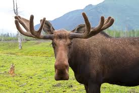
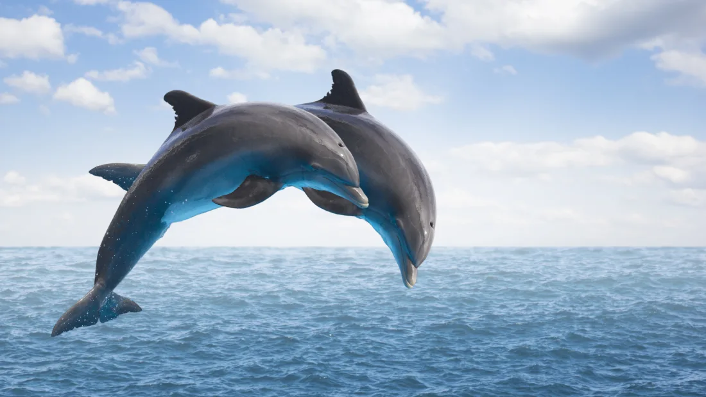

Giraffe

DescriptionThe giraffe is an African even-toed ungulate mammal, the tallest living terrestrial animal and the largest ruminant. It is traditionally considered to be one species, Giraffa camelopardalis, with nine subspecies.
Moose
The moose or elk, Alces alces, is a member of the New World deer subfamily and is the largest and heaviest extant species in the deer family. Moose are distinguished by the broad, palmate antlers of the males; other members of the deer family have antlers with a dendritic configuration.
Dolphin
Dolphin is a common name of aquatic mammals within the infraorder Cetacea. The term dolphin usually refers to the extant families Delphinidae, Platanistidae, Iniidae, and Pontoporiidae, and the extinct Lipotidae. There are 40 extant species named as dolphins.
Penguin

Penguins are a group of aquatic flightless birds. They live almost exclusively in the Southern Hemisphere, with only one species, the Galapagos penguin, found north of the equator. Highly adapted for life in the water, penguins have countershaded dark and white plumage, and their wings have evolved into flippers.